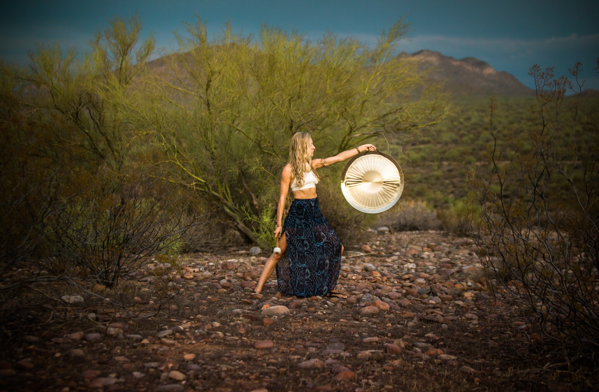
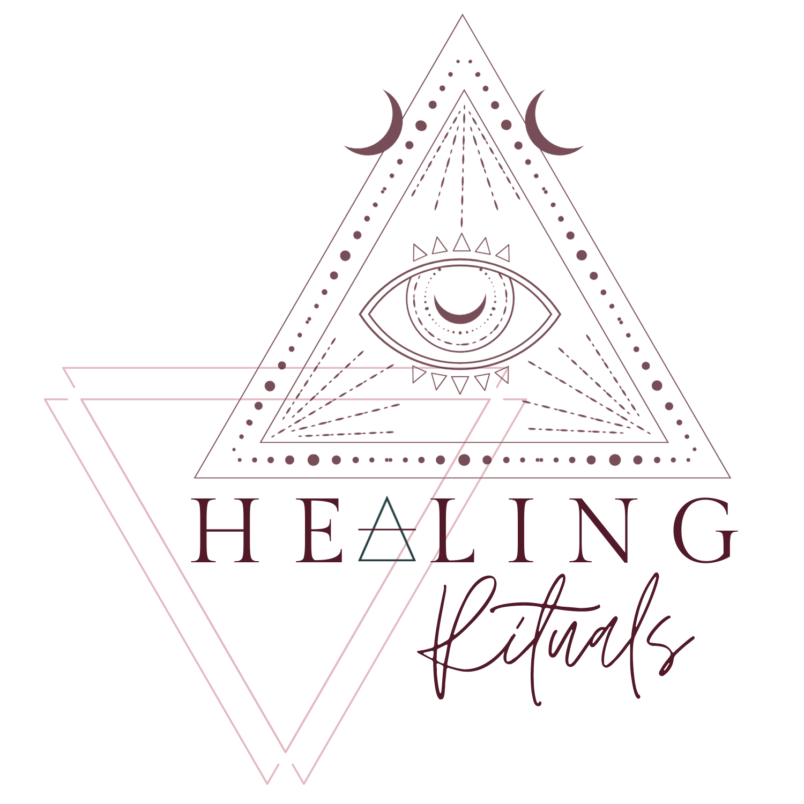
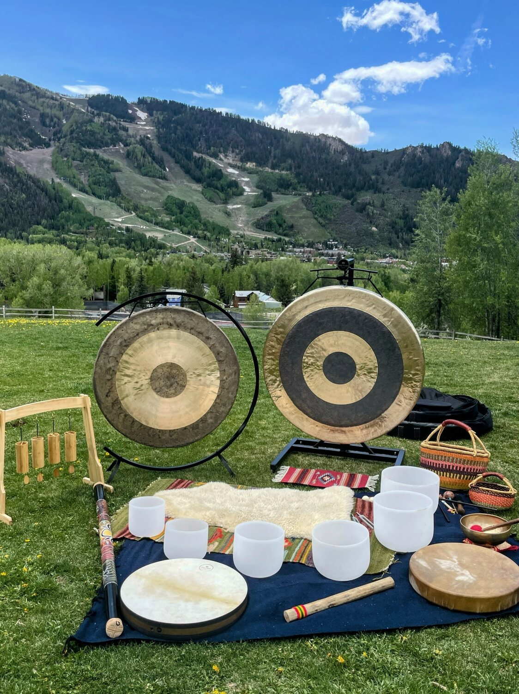
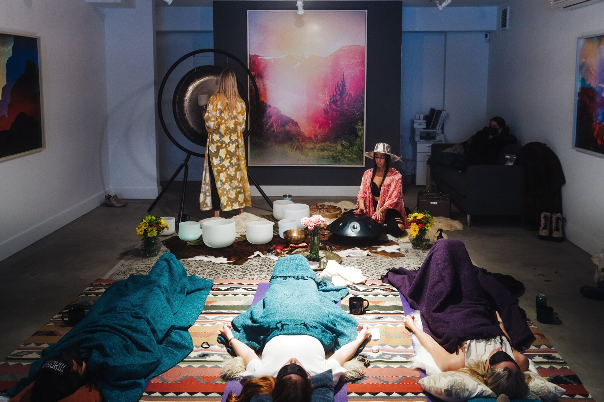
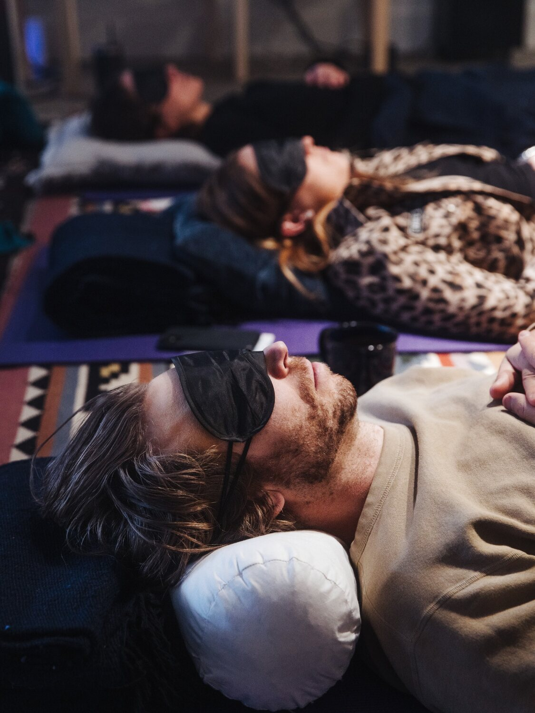
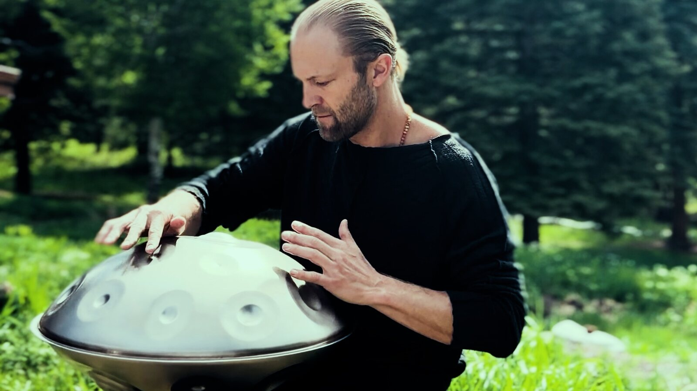

Retreats & Immersions
Open, deepen or complete a retreat with a grounding or plant-assisted ceremony that helps guests connect inward and integrate the experience together.

Private group experiences · Aspen & the Roaring Fork Valley
A custom journey weaving natural plant medicine, sound, vibration, subconscious imagery and energy—created around the people, purpose and feeling that bring you together.

An experience made for this moment
Some gatherings deserve more than another activity on the itinerary. They deserve a moment that changes how the room feels—and how people feel with one another.
Healing Rituals creates private, beautifully curated group experiences for retreat guests, conference attendees, friends, families and celebrations. Each journey is shaped around your group’s intention, energy, setting and desired depth—with natural plant medicine available as an intentional part of the experience.
Guests are invited to become completely comfortable, close their eyes and receive. Natural plant medicine, sound, gentle breath, guided imagery, vibration and passive energy work can unfold as one continuous healing tapestry—making the experience accessible even to those who have never meditated before.
Created around your people
Open, deepen or complete a retreat with a grounding or plant-assisted ceremony that helps guests connect inward and integrate the experience together.
Create a meaningful reset through restorative sound and guided inner exploration, or curate a deeper plant-assisted group journey around the gathering’s intention.
Transform time together into a memorable private ritual—with natural plant medicine available to deepen intention, connection and shared inner exploration.
Offer the group a beautiful alternative to the expected—an elevated sound, energy or plant-assisted experience centered on connection, intention and celebration.
Add a signature private offering—from restorative sound to a fully curated plant-assisted journey—to a luxury itinerary, residence, hotel, spa or private club.
From a quiet circle of close friends to a larger ceremonial or plant-assisted setting, every layer can be composed specifically for the moment you are creating.




Your custom healing tapestry
No two groups arrive with the same story. Your experience may be quiet and restorative, expansive and ceremonial, joyful and connective, or intentionally plant-assisted—a thoughtful movement through each layer.
From your vision to the room
Tell us who is gathering, what brings you together, where you will be, how you want the experience to feel and whether natural plant medicine is part of the vision.
Lauren shapes the natural plant medicine, sound, guided journey, energetic layers and practical details around your group and setting.
The environment and every layer of the plant-assisted or non-plant journey are prepared so guests can settle in, let go of effort and receive together.
Begin a private conversation
Share what you are imagining—even if the details are still taking shape. Our intake team will respond personally to explore the setting, group size, natural plant medicine preferences, desired experience and availability.
Prefer to connect directly?
healingritualsaspen@gmail.com
970-989-3333
A few helpful details
Yes. Group journeys can be planned for private residences, retreat venues, hospitality spaces and other suitable settings throughout Aspen, Snowmass, Basalt, Carbondale and the Roaring Fork Valley.
No. The experience is designed to be passive and welcoming. Guests are invited to rest comfortably while sound, guided imagery, gentle breath and vibration carry the journey.
The format is curated around the group and occasion. Your inquiry can include the available time window, and the final experience will be designed to flow naturally within the gathering.
Yes. Natural plant medicine can be woven into the journey as an intentional element alongside sound, subconscious imagery, gentle breath, energy work and ceremony. Your inquiry helps us understand the group, setting and depth you are envisioning.
Yes. The language, sound, energetic focus, pacing and ceremonial elements can be shaped around your intention, group dynamic and desired atmosphere.